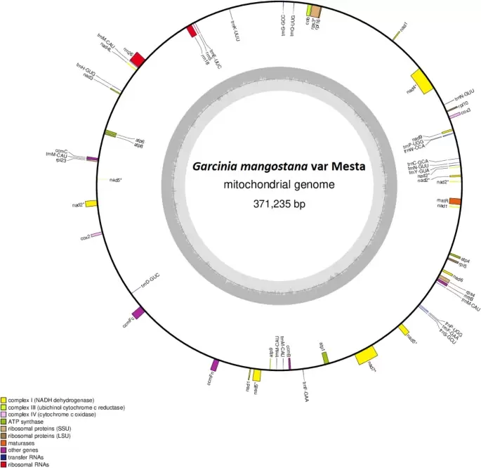

Mangosteen
|
Mangosteen (Garcinia mangostana L.) from the Clusiaceae family is known as the “Queen of fruits”, which is an evergreen tropical fruit tree native to Malaysia. Apart from its delectable white fruit pulp with a sweet unique taste, mangosteen pericarp contains pharmaceutically useful phytochemicals, especially the polyphenolic xanthones with various medicinal properties. Due to the health benefits and commercial values from its pericarp extracts, mangosteen has attracted growers’ attention for mass propagation commonly through seeds.
Mangosteen is an apomictic tropical fruit tree species, which asexually produces recalcitrant seeds that are sensitive to desiccation and not viable for long-term storage. Furthermore, However, the slow-growing trees only bear fruits with only one or two seeds biennially after five to seven years. There are two varieties of mangosteen in Malaysia, the more common variety is the round-shaped manggis compared to the oblong-shaped Mesta fruits believed to be originated in Pahang. Mesta fruits are more popular due to a more solid texture of the pulp. |

|

Genomics
|
TRANSCRIPTOMICS
|
In this study, we have generated a reference transcriptome from TGICL clustering of Trinity de novo assembly of all publicly available mangosteen Illumina datasets. The expression levels of all unigenes from different experiments were profiled based on TPM values. In collaboration with Prof. Dr. Nicholas J. Provart and Dr. Asher Pasha, we have incorporated these data into the mangosteen eFP Browser for displaying gene expression data in pictographs with different modes: "Absolute", "Relative", and "Compare". The mangosteen reference transcriptome in the BAR SequenceServer allows researchers to perform custom local BLAST search of homologous sequences to explore the corresponding gene expression in multiple mangosteen tissues and across different available species in the database. This useful online tool will facilitate future functional genomics investigations of mangosteen for crop improvement.
DNA-SEQ ANALYSIS OF MANGOSTEEN Organelle Genomes
|
Plastomes (Mesta & Manggis)
The plastome of the Manggis variety (156,582 bp) obtained from reference-guided assembly of Illumina reads was found to be nearly identical to Mesta except for two indels and the presence of a single-nucleotide polymorphism (SNP). Phylogenomic analysis divided the six Garcinia plastomes into three groups, with the Mesta and Manggis varieties clustered closer to G. anomala, G. gummi-gutta, and G. oblongifolia, while the Thailand variety clustered with G. pedunculata in another group. These findings serve as future references for the identification of species or varieties and facilitate phylogenomic analysis of lineages from the Garcinia genus to better understand their evolutionary history.  The circular plastome of the G. mangostana variety Mesta and Manggis. The circular plastome of the G. mangostana variety Mesta and Manggis.
|
Mitogenome (Mesta)
In this study, we report the complete mitogenome of G. mangostana L. variety Mesta with a total sequence length of 371,235 bp of which 1.7% could be of plastid origin. The overall GC content of the mitogenome is 43.8%, comprising 29 protein-coding genes, 3 rRNA genes, and 21 tRNA genes. Repeat and tandem repeat sequences accounted for 5.8% and 0.15% of the Mesta mitogenome, respectively. There are 333 predicted RNA-editing sites in Mesta mitogenome. Phylogenomic analysis using both maximum likelihood and Bayesian analysis methods showed that the mitogenome of mangosteen variety Mesta was grouped under Malpighiales order. This is the first complete mitogenome from the family of Clusiaceae and provides a reference for future evolutionary studies of the Garcinia genus.  The circular mitochondrial genome of G. mangostana variety Mesta.
|
RNA-seq analysis of mangosteen seed germination
Garcinia-type seed germination is unique such that the primary root and shoot emerge from the opposite ends, which is akin to in vivo direct organogenesis. It is important to understand seed germination to inform strategy for the propagation and conservation of important plants, especially for recalcitrant species. However, little is known about the molecular physiology of tropical seed germination.

Transcriptomic analysis supported that mangosteen seed metabolism is maintained at an optimal level, continuous from the seed maturation stage, which is typical of a recalcitrant seed metabolism with starch and lipid as the main reserves.

{kind=link}
{kind=link}
{kind=link}
{kind=link}
{kind=link}
{kind=link}
{kind=link}
{kind=link}
|
The antagonistic relationship between ABA and GA is conserved in mangosteen as manifested by global gene expression changes based on the Arabidopsis co-expression network analysis. 
|
{kind=link}
This study also revealed mangosteen seed germination as a fascinating process encompassing a developmental pathway of in vivo direct somatic embryogenesis/organogenesis through transcriptional reprogramming of a common set of genes with the activation of ethylene signalling pathway concurring anaerobic respiration on D3.

|
For the first time, time-course transcriptome-wide gene expression during mangosteen seed germination from day 0 to day 7 was performed through RNA-sequencing with RT-qPCR validation using independent samples in triplicates. The analyses of differentially expressed genes (DEGs) and expression profile identified D3 as a key turning point for transcriptional reprogramming with an indication of a transient shift to anaerobic respiration.
Particularly, the activation of ethylene signalling through increased expression of genes involved in its biosynthesis and the upregulation of ethylene-responsive transcription factors lead to the induction of direct organogenesis concurrently with seed germination. Abscisic acid (ABA) signalling appeared to play a role in stress response while gibberellin (GA) provides growth potential during mangosteen seed germination. |
Significance
The current transcriptomic study comprehensively describes various molecular aspects of Garcinia-type recalcitrant seed germination and highlights similarities to in vitro somatic embryogenesis but without a differentiated embryo. This study provides insights to improve seed germination for the mass propagation of mangosteen. This first-time transcriptomic analysis of recalcitrant seed germination serves as a starting point for a more in-depth analysis of the many postulations generated from this study.
Proteomic profiling will be necessary to ascertain protein abundance with transcript expression while the quantification of phytohormones will be meaningful to understand the role of each plant growth regulators and their effects on mangosteen seed germination. It will also be interesting to perform comparative transcriptomic analysis of other recalcitrant seeds with differentiated/developed embryos in the future. The ability to improve seed germination has great agronomic potential and is important for the propagation of recalcitrant species.
Proteomic profiling will be necessary to ascertain protein abundance with transcript expression while the quantification of phytohormones will be meaningful to understand the role of each plant growth regulators and their effects on mangosteen seed germination. It will also be interesting to perform comparative transcriptomic analysis of other recalcitrant seeds with differentiated/developed embryos in the future. The ability to improve seed germination has great agronomic potential and is important for the propagation of recalcitrant species.
References
Grants
- Wee C-C, Pasha A, Provart NJ, Nor Muhammad NA, Subbiah VK, Arita M & Goh H-H* (2024) An eFP reference gene expression atlas for mangosteen. Scientia Horticulturae 112846. https://doi.org/10.1016/j.scienta.2024.112846 (Q1, IF:4.342)
- Midin M.R. & Goh H-H. (2022) The Mangosteen Genome. Chapman M.A. (ed) Underutilised Crop Genomes. Compendium of Plant Genomes. Springer Nature Switzerland. ISBN 978-3-031-00847-4
- Wee C-C, Nor Muhammad NA, Subbiah VK, Arita M, Nakamura Y & Goh H-H* (2023) Plastomes of Garcinia mangostana L. and comparative analysis with other Garcinia species. Plants 12(4):930. https://doi.org/10.3390/plants12040930 (Q1, IF:4.658)
- Wee C-C, Subbiah VK, Arita M & Goh H-H* (2023) The applications of network analysis in fruit ripening. Scientia Horticulturae 311, 111785. https://doi.org/10.1016/j.scienta.2022.111785 (Q1, IF:4.342)
- Wee C-C, Nor Muhammad NA, Subbiah VK, Arita M, Nakamura Y & Goh H-H* (2022) Mitochondrial Genome of Garcinia mangostana L. variety Mesta. Scientific Reports 12, 9480. https://doi.org/10.1038/s41598-022-13706-z (Q1, IF:4.38)
- Abu Bakar S, Sampathrajan SK, Loke K-K, Goh H-H* & Normah M.N. (2016) DNA-seq analysis of Garcinia mangostana. Genomics Data, 7, 62-63.
- Abu Bakar S, Kumar S, Loke K-K, Goh H-H* & Normah MN (2017) DNA shotgun sequencing analysis of Garcinia mangostana L. variety Mesta. Genomics Data, 12, 118-119.
- Midin MR, Loke K-K, Madon M, Nordin MS, Goh H-H* & Normah MN (2017) SMRT sequencing data for Garcinia mangostana L. variety Mesta. Genomics Data, 12, 134-135.
- Goh H-H*, Abu Bakar S, Kamal Azlan ND, Zainal Z & Normah MN (2019) Transcriptional Reprogramming during Garcinia-type Recalcitrant Seed Germination of Garcinia mangostana. Scientia Horticulturae 257, 108727.
- Midin MR, Nordin MS, Madon M, Saleh MN, Goh H-H & Normah MN (2018) Determination of the Chromosome Number and Genome Size of Garcinia mangostana L. via Cytogenetics, Flow Cytometry and K-mer Analyses. Caryologia 71:35-44. doi:10.1080/00087114.2017.1403762 PDF
- Mazlan O, Abdul-Rahman A, Goh H-H, Aizat WM & Normah MN (2017) Data on RNA-seq analysis of Garcinia mangostana L. seed development. Data in Brief 16:90-93.
- Abdul Rahman A, Goh H-H, Loke K-K, Normah MN & Aizat WM (2017) RNA-seq analysis of mangosteen (Garcinia mangostana L.) fruit ripening. Genomics Data. 12:159-160.
- Abdul-Rahman A, Suleman NI, Zakaria WA, Goh H-H, Noor, N. M. & Aizat, W. M. (2017) RNA extractions of mangosteen (Garcinia mangostana L.) pericarps for sequencing. Sains Malaysiana 46(8):1231-1240.
Grants
- REFERENCE DATABASE FOR FUNCTIONAL GENOMICS ANALYSIS OF MANGOSTEEN - Research University Grant: DIP-2020-018 [1 Aug 2020 – 31 Jul 2022] - PI
- MANGOSTEEN (GARCINIA MANGOSTANA) ORGANELLE GENOME PROJECT - NIG-Joint (A) Grant: 2A2021 [9 Mar 2021 – 30 Apr 2022] - PI
- MULTI-OMICS ANALYSIS OF MANGOSTEEN RIPENING - NIG-Joint (A) Grant: 2A2019 [26 Feb 2019 - 10 Oct 2019] - PI
- Genome-scale metabolic modelling of mangosteen xanthone biosynthetic pathway through transcriptomics and proteomics data integration - Research University Grant: DIP-2018-001 [14 Dec 2018 – 13 Dec 2020] – Co-researcher
- Mangosteen research sustainability using multi-omics integration and database development - Research University Grant: GUP-2018-122 [15 Nov 2018 – 14 Nov 2020] – Co-researcher
- GENOME-WIDE ANALYSIS OF GENE EXPRESSION DURING RECALCITRANT SEED DEVELOPMENT IN GARCINIA MANGOSTANA - Research University Grant: GUP-2015-051 [1 Jan 2016 – 31 Dec 2017] – Co-researcher
- UNDERSTANDING THE MOLECULAR MECHANISMS OF RIPENING IN MANGOSTEEN (GARCINIA MANGOSTANA L.) USING A TRANSCRIPTOMIC APPROACH - FRGS/2/2014/SG05/UKM/02/2 [1 Dec 2014 – 30 Nov 2017] – Co-researcher
Collaborators / Researchers
- Prof Dr Masanori Arita (NIG, Japan)
- Prof Dr Nicholas J. Provart (University of Toronto, Canada)
- Prof Dr Vijay Kumar (UMS)
- Dr Asher Pasha (University of Toronto, Canada)
- Dr WEE CHING CHING (2019-2023), Analysis of mangosteen fruit ripening through the assembly of organelle genomes, reference transcriptome, and co-expression network
- Dr ILI NADHIRAH BINTI JAMIL (2018-2022), Proteomics analysis and multiomics integration of mangosteen (Garcinia mangostana L.) fruit ripening
- AZHANI ABDUL RAHMAN (2015-2019), Transcriptomics analysis of mangosteen fruit ripening
- OTHMAN MAZLAN (2016-2019), Metabolomics analysis of mangosteen seed development and germination
- SYUHAIDAH BINTI ABU BAKAR (2013-2017), Global gene expression pattern of seed germination in mangosteen (Garcinia mangostana)
Copyright © 2025 UKM